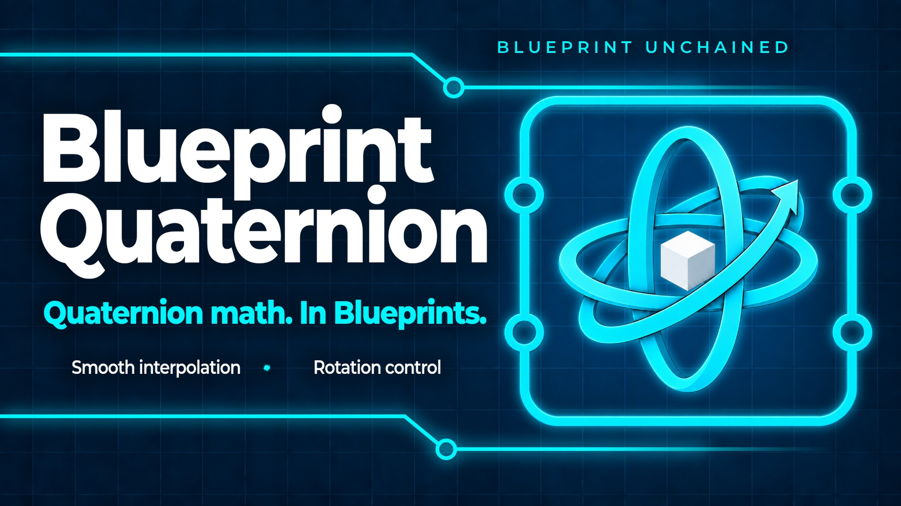
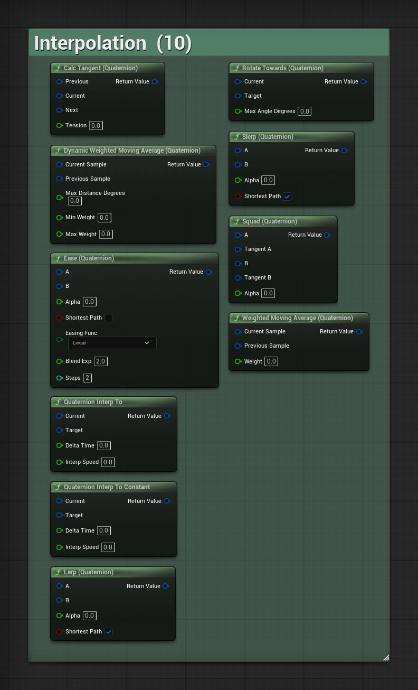
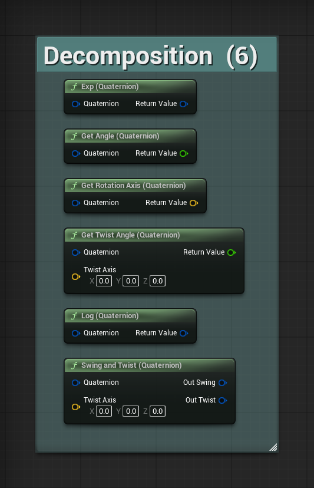
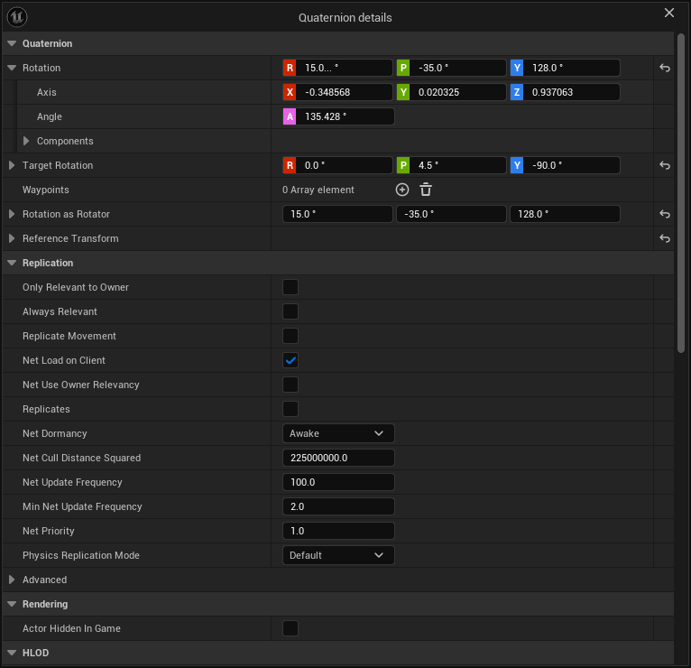

A Blueprint can already hold a quaternion. What it cannot do is much with one.
The engine's Blueprint math exposes a handful of quaternion nodes and stops. Everything past them — the shortest arc between two directions, swing and twist, the angle between two rotations, interpolation that does not flip or take the long way round — means a round trip through Rotator, or opening Visual Studio. That round trip through Rotator is where gimbal lock and interpolation artefacts come from.
Blueprint Quaternion is 85 nodes that close the gap: every function Rotator already has, on quaternions, plus the operations only a quaternion can do. They are pure functions, they sit in the palette next to the engine's own, and there is nothing to place, initialise or configure.
Enable Blueprint Quaternion in Edit > Plugins and restart the editor when it asks. That is the whole installation.
Every node is in the palette under Math > Quaternion, in the nine groups that make up The nodes. Right-click in a graph and type part of a name — the nodes carry keywords, so shortest arc finds Find Between Vectors and swing finds the decomposition.
Nothing ticks, nothing is registered at runtime, and nothing is added to your packaged build beyond the functions themselves. The library is marked BlueprintThreadSafe, so its nodes are offered in an Animation Blueprint's thread-safe update as well as on the game thread.
There is one setting, and it belongs to the editor rather than to the game: see Turning the row off.
Four rules hold the whole set together. They are worth two minutes now, because each is a decision that could have gone the other way, and three of the four are invisible when you get them wrong.
Every angle pin, in and out, is degrees — including the ones the engine's own nodes hand back in radians. Angular Distance, Get Angle, Get Twist Angle and the length of a rotation vector are all degrees here.
If you mix these nodes with the engine's quaternion nodes, that is the one difference to watch.
The same order as the engine's own quaternion multiply, and as matrix multiplication: the right-hand rotation happens first, and the left-hand one then rotates the result.
This is the rule that hides. Reverse it and every node still runs, every graph still compiles, and every value is wrong in a way that reads like a tuning problem. The node's tooltip says so, and the pins are named A and B in that order for the same reason.
Every node that takes a quaternion as a rotation normalizes it first. A zero-length or NaN value becomes Identity — a rotation that does nothing — instead of running on through the frame as a NaN and surfacing three systems later.
The Components group is the documented exception. Those nodes exist to treat a quaternion as four numbers, and normalizing there would defeat the purpose.
A quaternion and its negation are the same orientation. Nearly Equal says so, because that is the question people are actually asking.
When the question really is about the four stored numbers — comparing against something serialized, or debugging your own math — Equals Componentwise is there for it.
85 nodes, all pure, under Math > Quaternion. The names below are the names in the palette.
Building a rotation from whatever you have.
| Node | What it does |
|---|---|
| Identity (Quaternion) | The rotation that does nothing. |
| Make Quaternion (Axis and Angle) | A rotation of an angle about an axis. A zero-length axis gives Identity. |
| Make Quaternion (Euler) | From Euler angles, X = Roll, Y = Pitch, Z = Yaw. |
| Make Quaternion (Roll, Pitch, Yaw) | The Make Rotator constructor, on a quaternion. |
| Make Quaternion (Rotation Vector) | Direction is the axis, length is the angle. The form that adds and scales like a vector. |
| Make Quaternion From X | Points its forward axis along the vector. |
| Make Quaternion From Y | Points its right axis along the vector. |
| Make Quaternion From Z | Points its up axis along the vector. |
| Make Quaternion From XY | Forward from the first vector, right as close to the second as it can be. |
| Make Quaternion From XZ | Forward from the first, up as close to the second as it can be. |
| Make Quaternion From YX | Right from the first, forward as close to the second as it can be. |
| Make Quaternion From YZ | Right from the first, up as close to the second as it can be. |
| Make Quaternion From ZX | Up from the first, forward as close to the second as it can be. |
| Make Quaternion From ZY | Up from the first, right as close to the second as it can be. |
| Make Quaternion From Axes | From all three axis vectors at once. |
| Find Look At Quaternion | The rotation that looks from one point towards another. |
| Find Relative Look At Quaternion | The same, expressed in another transform's space. |
| Find Between Vectors | The shortest rotation taking one direction to another. |
| Find Between Normals | The same, for vectors already known to be unit length. |
| Break Quaternion (Axis and Angle) | Back to an axis and an angle in degrees. |
| Break Quaternion (Roll, Pitch, Yaw) | Back to three angles, matching Break Rotator. |
To and from everything else a rotation gets stored as.
| Node | What it does |
|---|---|
| To Euler (Quaternion) | Euler angles as X = Roll, Y = Pitch, Z = Yaw. |
| To Rotation Vector (Quaternion) | The axis scaled by the angle in degrees. |
| To Rotator (Quaternion) | The engine's Rotator, for anything that still takes one. |
| To Quaternion (Rotator) | The way back. |
| To Vector (Quaternion) | The forward direction of the rotation. |
| To Transform (Quaternion) | A transform with this rotation, no translation and unit scale. |
| To Matrix (Quaternion) | The rotation as a matrix. |
| To Quaternion (Matrix) | A rotation read back out of a matrix. |
| To String (Quaternion) | Text, so Print String has something to say about a quaternion. |
The engine ships no quaternion-to-string node, which is why a quaternion printed anywhere before now came out empty.
Combining rotations, and undoing the combination.
| Node | What it does |
|---|---|
| Compose Quaternions | Applies B, then A. See Compose (A, B) applies B, then A. |
| Inverse (Quaternion) | The rotation that undoes this one. |
| Delta (Quaternion) | The rotation that takes A to B. |
| Scale Angle (Quaternion) | A fraction of a rotation, about the same axis. |
| Get Shortest Arc With | The same orientation, signed so that it interpolates the short way to a reference. |
Using a rotation on something.
| Node | What it does |
|---|---|
| Rotate Vector (Quaternion) | Rotates a vector by the rotation. |
| Unrotate Vector (Quaternion) | Rotates it back. |
| Get Forward Vector (Quaternion) | The rotation's forward axis. |
| Get Right Vector (Quaternion) | Its right axis. |
| Get Up Vector (Quaternion) | Its up axis. |
| Get Axes (Quaternion) | All three at once, for when you need the basis. |
| Transform Quaternion | Applies a transform's rotation to a rotation. |
| Inverse Transform Quaternion | The way back. |
| Make Transform (Quaternion) | A transform from location, this rotation and scale. |
| Break Transform (Quaternion) | A transform apart, with the rotation as a quaternion. |
Make and Break Transform matter more than they look: they are how a transform gets built and taken apart without a Rotator in the middle, which is where a rotation picks up gimbal lock.
The group most people come for.

| Node | What it does |
|---|---|
| Slerp (Quaternion) | Constant angular speed between two rotations, with a shortest-path pin. |
| Lerp (Quaternion) | The cheap one, normalized, also with a shortest-path pin. |
| Ease (Quaternion) | The easing curves you already use on floats, on a rotation. |
| Quaternion Interp To | Chases a target, frame by frame, at a speed. |
| Quaternion Interp To Constant | The same at a fixed angular rate, so it arrives predictably. |
| Rotate Towards (Quaternion) | Steps towards a target by at most a given angle. |
| Squad (Quaternion) | A smooth path through a series of key rotations rather than a corner at each. |
| Calc Tangent (Quaternion) | The tangents Squad needs, from three consecutive keys. |
| Weighted Moving Average (Quaternion) | Smooths a noisy rotation with a fixed weight. |
| Dynamic Weighted Moving Average (Quaternion) | The same, with a weight that rises the further apart two samples are. |
The shortest path pin is worth knowing about. Any pair of orientations can be described two ways, one of which interpolates the short way round and one the long way. Left on, you get the short way, which is what a turret or a camera wants. Turned off deliberately, the long way is the only way to animate more than half a turn.
Taking a rotation apart. Most of this group has no Rotator equivalent at all.

| Node | What it does |
|---|---|
| Swing and Twist (Quaternion) | Splits a rotation into a twist about an axis and the swing that is left. |
| Get Twist Angle (Quaternion) | Just the twist, in degrees, when the swing is not wanted. |
| Get Angle (Quaternion) | How far this rotation turns, in degrees. |
| Get Rotation Axis (Quaternion) | What it turns about. |
| Log (Quaternion) | The rotation in a form that adds and scales. |
| Exp (Quaternion) | The way back from that form. |
Swing and twist is the one operation a Rotator cannot express. Aim offsets, joint limits, a spine that twists without leaning, a steering wheel that turns without tilting — all of them are this node.
Asking about a rotation.
| Node | What it does |
|---|---|
| Angular Distance (Quaternion) | The angle between two rotations, in degrees. |
| Normalize (Quaternion) | A unit-length copy. |
| Is Normalized (Quaternion) | Whether it already is one. |
| Nearly Equal (Quaternion) | Whether two rotations are the same orientation, within a tolerance. |
| Not Nearly Equal (Quaternion) | The negation, so a branch reads the way it should. |
| Is Identity (Quaternion) | Whether it is the rotation that does nothing. |
| Is Finite (Quaternion) | Whether every component is a number. |
| Select Quaternion | One of two rotations, on a condition. |
Angular Distance answers "how far is this from facing the player" in one node, in degrees, with no dot products and no vectors on the way.
| Node | What it does |
|---|---|
| Random Quaternion | A random rotation, matching what the engine's Random Rotator produces. |
| Random Quaternion From Stream | The same, from a random stream. |
| Random Quaternion (Uniform) | A genuinely uniform random rotation, evenly spread over all orientations. |
| Random Quaternion (Uniform) From Stream | The same, from a random stream. |
| Random Quaternion In Cone | A random rotation within a cone, for spread and scatter. |
There are two of them because the engine's Random Rotator is not uniform: it draws its angles independently, which clusters the results towards the poles. Random Quaternion matches it, quirks and all, so a rotation that already looks right keeps looking right. Random Quaternion (Uniform) is the one to reach for when the spread itself matters.
The stream versions are what to use for anything that has to replay identically — a seeded run, a replay, a deterministic test.
The four numbers underneath, for anyone writing their own math. This group is the documented exception to normalization: it does not normalize anything.
| Node | What it does |
|---|---|
| Make Quaternion (Components) | From raw X, Y, Z and W. |
| Break Quaternion (Components) | Back to the four numbers. |
| To Vector4 (Quaternion) | The four numbers as a vector. |
| To Quaternion (Vector4) | The way back. |
| Add (Quaternion) | Componentwise addition. |
| Subtract (Quaternion) | Componentwise subtraction. |
| Scale Components (Quaternion) | Every component times a number. |
| Dot (Quaternion) | The dot product, which is also how aligned two rotations are. |
| Size (Quaternion) | Its length. |
| Size Squared (Quaternion) | Its length squared, for comparisons. |
| Equals Componentwise (Quaternion) | Whether the stored numbers match, sign and all. |
A quaternion property in the details panel is normally four numbers nobody types. This plugin replaces that row.

The header shows Euler angles, the way a Rotator reads. Open the row and there is axis and angle below it, and the raw X, Y, Z and W in a group of their own — for when a value looks wrong and you want to see what is actually stored.
Drag a field to change it, the way you drag a Transform. The fields are the same width as a Transform's, the coloured letter sits inside the field, and the tooltip names the axis it belongs to. If your project renames its axes to Forward, Left and Up, the row reads that way too, because it takes its names, tooltips and colours from the place the engine's own rows take them.
Text pasted onto the row is accepted, either as a Rotator or as raw quaternion components.
And the row works with more than one object selected, which the engine's own quaternion row does not: that one reads its value only when exactly one object is selected, and goes blank otherwise.
The plugin takes over how every quaternion property in the project is drawn, engine assets included. That is intrusive enough to deserve a switch, and "uninstall the plugin" is not an acceptable way to get the old row back.
Editor Preferences > Plugins > Blueprint Quaternion > Override the quaternion details panel row turns it off and puts the engine's row back immediately, with no restart.
The setting is per user, not per project. Turning it off is your preference, and it does not change what a teammate sees.
Short answers to the things people open a quaternion library for.
Find Look At Quaternion from the turret to the target, then Rotate Towards from the turret's current rotation with the maximum degrees for this frame. Rotate Towards never overshoots, so the turret stops when it arrives instead of oscillating around the target.
Quaternion Interp To Constant does the same job when you would rather think in degrees per second than degrees per frame.
Swing and Twist about the joint's own axis. Clamp the twist angle, leave the swing alone, and Compose the two back together — remembering that Compose applies B then A. A Rotator cannot express that split at all, which is why joint limits built on Rotators fight the animation.
Find Between Normals, from the object's up axis to the surface normal, gives the shortest rotation that lays it flat. Compose that with the object's existing rotation to keep its facing. The same node aligns a decal to a wall, a foot to a slope, or a ship to its velocity.
Angular Distance between the two rotations. One node, degrees out.
Weighted Moving Average, or the dynamic one when the input speeds up and slows down — head and hand tracking, a camera following a physics body, anything arriving over the network.
Turn the shortest-path pin off on Slerp. With it on, a rotation past 180 degrees takes the short way round and appears to go backwards, which is correct and not what was asked for.
To String (Quaternion) into Print String. The engine has no node for this, so until now a quaternion was the one value that could not be looked at.
Swap the pins on Compose. Compose(A, B) applies B, then A. This is the most common mistake with quaternions in any engine, and the symptom is always the same: everything works, every value is wrong, and it reads like a tuning problem.
Degrees against radians. Every pin in this plugin is degrees; several of the engine's own quaternion nodes return radians. One radian is 57.2958 degrees, so a value that is 57 times too large or too small has been through one node of the other kind.
Nearly Equal compares orientations and already treats a quaternion and its negation as equal, so a false answer means the orientations really do differ. Check the tolerance pin before suspecting the node.
If the question is about stored numbers rather than orientations, use Equals Componentwise.
The shortest-path pin, or a rotation that is not signed consistently with the one it is interpolated against. Get Shortest Arc With re-signs one rotation against a reference, which is the fix when the keys come from somewhere you do not control.
Not in these nodes: every one taking a quaternion as a rotation normalizes it first, and a zero-length or NaN input becomes Identity rather than propagating. Is Finite tells you whether the value arriving in a node is already broken, and the Components group is the one place that passes a bad value through, by design.
15.0... °The three dots are the editor's own way of saying the number shown is rounded — every numeric field in the editor does it, and the field is not too narrow. A quaternion has no exact Euler angles, only infinitely many equivalent sets, so a rotation built from 15 degrees reads back as 15.000000000000004. The row shows three decimals, which is a thousandth of a degree, and marks the rest as dropped.
Open the Components group if you want to see exactly what is stored.
Check Editor Preferences > Plugins > Blueprint Quaternion. The override is on by default, and it is a per-user setting, so it can be off on one machine and on for the rest of the team.
Questions, bug reports and feature requests: tomasz.klin+blueprintquaternion@gmail.com.
Include the engine version and the plugin version — this manual documents 1.0.0 — and, where it applies, a screenshot of the graph. A Blueprint that reproduces the problem is worth more than any description of it.